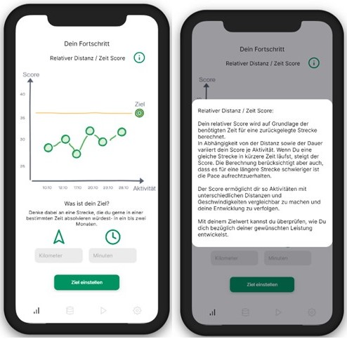

In course of my master thesis I developed a fitness app during a one year research project.
Abstract: Regardless of their potential to promote the motivation to engage in physical activity, fitness apps are often only partially effective in practice and can under certain circumstances unfold the opposite effect. One reason for this is the limited consideration of behavioural processes in the design of fitness apps. Following on this translational gap between science and practice, the objective of this research is to develop practical design principles for the motivational design of fitness apps on the basis of scientific findings. Using action design research (ADR), we developed and evaluated an app prototype in an intervention study.Thereby we investigated motivational mechanisms in the use of fitness apps. Results show that the perception and impact of single features is differentiated on an individual level and depends on participant‘s motives and partly also on their motivation type. For a motivational design of fitness apps, it is therefore necessary to take user characteristics into account and to align the design of features to these. In addition, physical progress should be revealed by providing meaningful feedback and the self-determined form of motivation needs to be stimulated in order to ensure ongoing physical activity. The use of an activity-specific fitness score, as developed in this research, could be suitable for this purpose.
The aim of the project was to investigate motivational mechanisms and their association with fitness app use. Based on a systematic literature review, we developed a fitness app whose features we examined in an intervention study. Finally, we created practical design principles for the motivational development of fitness apps from the analysis of user data.
In a research phase lasting several months, we developed the fitness app, which was used by the test persons (n = 15) in a six-week intervention study. The test persons were involved in the agile development process from the beginning. On the one hand, the app was evaluated by means of qualitative user interviews and, on the other hand, we analysed the subjects' activity and motivation data with regard to possible changes to the control phase in the course of the intervention. Finally, a cluster analysis was used to investigate different correlations. The following is a clear overview of the study design and structure.
.jpg)
My tasks: (Tools)
One example of a developed feature:

The evaluation of the features shows that on a technical level, the user's goal orientation and motives in particular could serve as criteria for a systematic orientation to the needs of the individual as they can determine the impact of single features. Motivational regulation also offers an explanation for the different effects of app features. Independently of this, a high correlation between the self-determined form of motivation and the activity behaviour is visible. In addition to the individualised offer of activities, a consistent stimulation of these forms of motivation and competence is therefore necessary to ensure the supporting effect of an app. A promising approach to this is the illustration of the interaction between activity behaviour and physiological adaptations of the body. From the ADR research, we can conclude that the use of an activity-specific fitness score could be useful for this purpose.
Fitness apps have the potential to facilitate a physically active lifestyle if they not only offer short-term motivational stimuli, but also address deep motivational mechanisms through their features. For this, a consistent further development of app features is necessary. The design principles developed and evaluated in this work are a starting point for the practical development of fitness apps. For an effective design of these, further scientific investigation of the mode of action and the technical design is also necessary. Ultimately, app developers could fulfil the motivation-specific user requirements of an app by stringently taking scientific findings into account in practical applications.